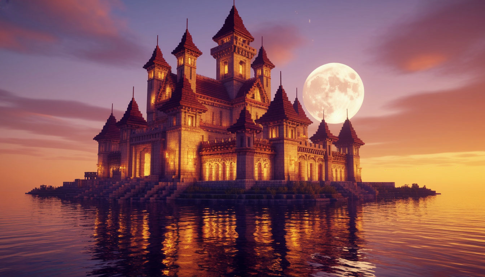
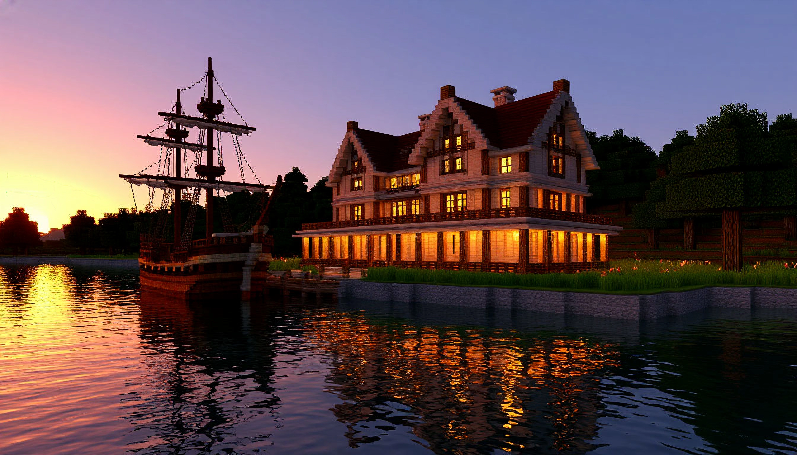
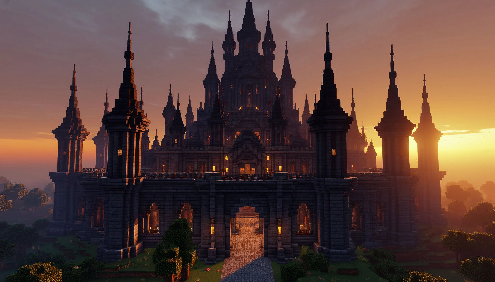

Лунный замок
Старинная крепость, освещенная мягким светом фонарей, возвышается над водной гладью. Идеально для любителей фэнтези и мистической атмосферы.

Тихая гавань
Уютный особняк на берегу озера, окруженный природой. Создает ощущение уединения и спокойствия, словно место для отдыха вдали от цивилизации.

Замок теней
Темное, мрачное строение с высокими шпилями, затерянное в густом тумане. Внутри — переплетение секретных ходов, скрытых залов и загадочных символов.